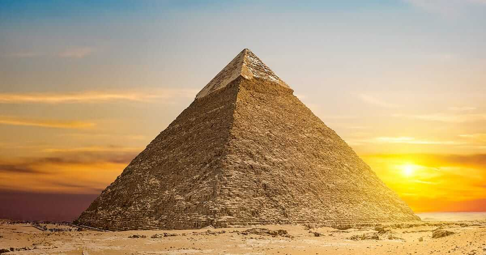

Vista frontale della piramide di Chefren
La Piramide di Chefren (IV sovrano della IV dinastia) è la piramide centrale fra le tre situate sulla piana di Giza, la seconda più alta e la seconda più grande del gruppo. Era il cenotafio eretto dallo stesso Chefren durantel'Antico Egitto e denominato "Wr Kafre" ossia "Grande è Kafre".
Il conferimento a Chefren della seconda piramide deriva da una tradizione di epoca più tarda rispetto alla costruzione ed è dovuta soprattutto alla presenza di ritrovamenti del suo nome sul vano di ingresso del tempio funerario, su quello del tempio a valle relativo e su alcune statue trovate all'interno di quest'ultimo.
La piramide fa parte di un grande complesso funerario comprendente anche il tempio funerario, detto anche tempio alto, dedicato principalmente al culto del Ka del faraone defunto, e il tempio a valle, posto più vicino al Nilo, che serviva a ospitare momentaneamente il sarcofago del defunto portato a riva dopo aver attraversato il fiume. I due templi erano collegati da un percorso lungo 495 metri. A sud della piramide maggiore ne era presente un'altra molto più piccola. A ovest e a nord ovest si trovava, come parte della compagine, anche il villaggio che ospitava gli operai. A sud ovest invece era collocata la Grande Sfinge.
Tutto il complesso funerario del sovrano fu riportato alla luce tra il 1909 dalla spedizione tedesca di Ernst Von Sieglin con l'egittologo Georg Steindorff e l'architetto Uvo Hölscher, e il 1932 con Selim Hassan del Servizio Antichità Egizie, anche se in realtà Auguste Mariette aveva già individuato il tempio a valle attribuendolo erroneamente al complesso della Sfinge.